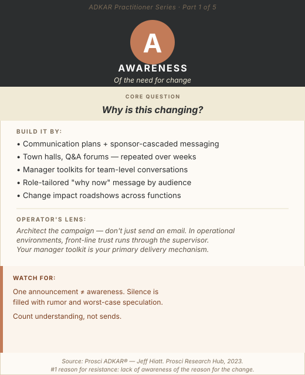

In 2023 automated dispatch at Verizon had been stuck between 30 and 40 percent for a year. Every attempt to fix it added business rules to the algorithm, and the rules kept making it worse. Underneath, nobody governed the map. Any manager could create a work area or assign a zip code, so years of drift left single zip codes living in six different work areas and a technician in Baltimore eligible for work in Charlottesville.
The fix was a redesign of 41,326 zip codes into 521 work areas, and IT resisted it heavily, even though the bad data was not theirs. We did not take it to the field supervisors as a data cleanup. We showed them what the bad data meant for their teams: the system was making illogical assignments, and their technicians were driving longer between jobs. We held workshops with front-line staff and leadership, interviewed every field supervisor, and had the supervisors review the first-pass designs and adjust them with local knowledge. A pilot in Virginia came first, and its success won IT's support and approval to take the redesign national. Auto-dispatch moved from the 30-40% range to the 70-80% range.
The supervisors needed to understand why the change mattered to their own teams, and they needed to hear it before the rollout, from people who had listened to them first. Most programs build Awareness another way. The email goes out, the all-hands is held, leadership says the right things, and three months later the project team is asking why people "still don't understand why this is happening."
That is the Awareness gap in its most common form. It persists because most organizations treat information delivery as if it were awareness building. Awareness is a state of understanding that people reach through repeated, relevant communication from people they trust, over time, and it has to be designed into the program.
Foundation
What Awareness Is
Awareness is the first building block in the ADKAR model, and the one most often assumed rather than built. Prosci puts it this way: "Knowing why a change is being made, the nature of the change, and the risk of not changing are key for a successful change." In practice, that means a person understands three things:
- What is changing
- Why it is changing: the business reasons, the market or operational pressures, the risks of staying the same
- Why now: what has made this the right moment, and what happens if the organization doesn't move
Without all three, Awareness is incomplete. A person can know "something is changing with our procurement process" and still have almost no Awareness in the ADKAR sense if they don't understand the drivers behind it or the consequence of doing nothing.
When Awareness is incomplete, people supply their own explanations: rumor, fear, worst-case speculation, and the quiet conclusion that leadership isn't being straight with them. In Prosci's research, the top reason for employee resistance is "lack of awareness of the reason for the change." Everything else in ADKAR is built on the why.

ADKAR Practitioner Series, Part 1: Awareness. Diagnose the barrier point first.
Diagnosis
How to Confirm an Awareness Barrier Point
Before prescribing an Awareness intervention, confirm that Awareness is the barrier, and not Desire or Ability. These are the signals of an Awareness gap:
Awareness Gap Signals
- People are asking "why is this happening?" long after the change has been announced
- Misinformation and rumors are circulating in team conversations
- Managers report that their teams "don't see the need" for the change
- Different parts of the organization have different understandings of what is changing
- Employees are supportive in principle but uncertain about what is expected of them
A quick diagnostic: ask a frontline employee three questions, what is changing, why it is changing, and why now. If they can answer all three accurately and specifically, you have Awareness. If they give you a vague or incorrect answer, you have found the barrier point.
Program Design
Eight Blueprints for Building Awareness
The Three-Question Awareness Audit (Start Here)
Before designing any communication, the project team should be able to answer three questions in everyday language, for every major affected audience: What is changing, specifically? Why is it necessary right now? What happens if we don't change? These are the questions Prosci says employees ask: "Why should we make this change?" "And why now?" "What if we don't?"
If the team cannot answer all three for each major audience, the awareness campaign is incomplete before it starts. This audit is the brief for everything that follows.
The Awareness Campaign Architecture
Awareness is built through a sustained campaign, typically 4 to 8 weeks for a significant change:
- Week 1 Executive launch. The senior sponsor gives the answers to the three questions publicly, with data. The tone is transparent, serious and direct, a frank conversation rather than a celebration.
- Weeks 2-3 Manager cascade. Using the toolkit, people managers run team-level conversations that translate the organization-level message into "what this means for our team."
- Week 4 Q&A sessions. Open forums, small group conversations, or digital Q&A channels where questions get straight answers. Anonymous submission options make it easier to raise hard questions.
- Week 5 Reinforce through channels. Updated intranet content, short FAQ documents, and short leadership video messages that address the questions that came up in the forums, along with the ones the team anticipated.
- Week 6 Pulse check. A brief 3-question survey to find where Awareness gaps remain by team or function. Use the results to direct targeted follow-up instead of another mass broadcast.
This is a starting framework. Larger, more complex changes need longer campaigns and more layers. The point is that Awareness is designed and measured, and nobody assumes it arrived because a message was sent.
The Manager Toolkit
In operational and enterprise environments, the people manager is the channel employees want for what the change means to them personally. A manager toolkit that gets used contains:
- a 10-slide deck (at most) designed for a 20-minute conversation, used as a conversation guide rather than a presentation
- an FAQ with the top 15 anticipated questions answered honestly, including the hard ones
- talking points that connect the organization-level drivers to the specific impacts on the manager's function
- a two-page impact brief for their department
The most important element is honesty. Managers who read a toolkit and feel they are being asked to spin a difficult message will not deliver it. A toolkit that acknowledges uncertainty where it exists builds more trust than one that presents false confidence.
The Executive Storytelling Series
A single all-hands announcement from the CEO is one event. A sequenced series of short communications from senior leaders, each building on the last, does much more to move Awareness from "I heard something is changing" to "I understand why this matters."
A format that works: 3 to 5 minute recorded videos, shot in an operational setting rather than a boardroom, where the executive answers the three core questions directly and personally. Release one video a week for the first three weeks, each on a different angle: the business case, the risks of the status quo, and what success looks like. Video is personal, hard to skim, and puts leadership on record with the message in a way an email does not.
The Change Impact Roadshow
For changes that touch multiple functions or teams, a cross-functional roadshow that walks the change through the end-to-end value stream is one of the most effective Awareness tools available. Bring representatives from every affected function into a facilitated session. Walk the process flow from beginning to end, and stop at each handoff to explain what changes, for whom, and why.
A roadshow does two things individual team briefings cannot: it makes the interdependencies visible, so people understand their piece in context, and it cuts down the speculation that generates resistance. In process excellence work, the roadshow often doubles as a stakeholder alignment session and surfaces integration gaps the design team missed.
Listening Before Broadcasting
Before launching the campaign, conduct 10 to 15 structured stakeholder interviews or focus groups with representatives from the key affected populations. The purpose is to learn what people already believe about the current state, which assumptions they hold, and which concerns are already in the room before the campaign starts.
What you learn improves the campaign directly: which fears need to be addressed head-on, which benefits will matter to people, and which messages will fall flat or feel tone-deaf. Organizations that skip this step often discover midway through the campaign that they have been answering the wrong questions. The supervisor interviews in the dispatch redesign did this job.
The Awareness Heat Map
After the initial campaign, run a 3-question pulse check by team or function and plot the results on an org chart. Where awareness scores are strong, communications can shift to maintenance. Where they are weak, hold targeted conversations instead of sending more mass broadcasts.
The heat map also surfaces a pattern that is easy to miss in aggregate data: awareness gaps are rarely uniform. Often a specific function, geography or management layer has not received or understood the message, and the heat map points you to where the next intervention belongs. A team with low awareness often has a manager who has not yet held the cascade conversation.
The "Cost of the Status Quo" Evidence Package
Most awareness campaigns explain what is changing. Fewer explain specifically why the current state is inadequate. Build a dedicated evidence package: current performance data showing where the status quo is failing (error rates, cycle times, customer complaints, compliance gaps, cost overruns), paired with two or three brief stories that connect the data to people's work.
In operational environments this is especially effective, because front-line workers often already feel the pain of the current state and have not seen it quantified or acknowledged by leadership. An evidence package that confirms what they have been saying, with leadership's numbers behind it, builds Awareness and Desire at the same time. The technician in Baltimore eligible for work in Charlottesville was that kind of evidence.
The Operator's Lens
Cynicism is earned. In organizations with a history of change initiatives that were launched with fanfare and quietly abandoned, the workforce is skeptical of announcements. The awareness campaign has to show what is different this time with evidence: visible executive behavior, dedicated resources, realistic timelines, and a willingness to acknowledge what is hard.
Process changes have downstream complexity. When a process changes in one part of the operation, the awareness campaign has to cover the downstream effects. People need to understand their own piece, and they also need enough cross-functional context to understand why the handoff protocols are changing, what their upstream partners will be doing differently, and what is expected of them at each boundary. Missing this creates Awareness gaps that show up as adoption problems in functions that weren't the "primary target" of the change.
Front-line trust runs through the supervisor. Prosci's research finds that employees want two different senders. "For business messages about the change, employees want to hear from someone at the top of the organization or their division," and "for personal change messages, employees want to hear from their immediate supervisor." Neither is the project team. An executive video gives the business reasons. A 15-minute conversation with their supervisor, in the language of their team's workflow, tells them what it means for them. That makes the manager toolkit and the cascade training the main delivery mechanism for the personal message, and the place to invest first.
Common Traps
Mistakes to Avoid
Counting sends instead of understanding.
Email open rates and meeting attendance are activity metrics. Awareness is measured by whether people can accurately answer the three core questions, so measure that.
Uniform messaging for non-uniform audiences.
Executives, people managers and front-line employees all need Awareness, but the "why" has to match each role and its concerns. One message for all audiences is a shortcut that costs you at every level.
Stopping after the launch.
Many awareness campaigns end at the kickoff event. Awareness fades without reinforcement, so build the campaign to run through the first phase of implementation.
Confusing transparency with oversharing.
Being candid about uncertainty ("we don't yet know how this will affect X, and we'll communicate as soon as we do") builds more trust than either false confidence or information overload. Acknowledge what you don't know. People can handle uncertainty better than they can handle being misled.
When a change reached your team, who explained the why to you, and did it come before the rollout or after it?
Source references: Prosci, The Prosci ADKAR® Model for Organizational Change Success (eBook): top reasons for employee resistance (Prosci Research Hub, 2023), the questions employees ask about a change. Prosci, An Introduction to Change Management: what Awareness requires. Prosci, "Communications Checklist for Change Management" (prosci.com): preferred senders for business and personal messages.